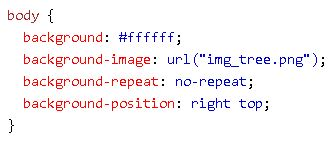
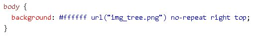
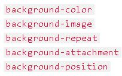

Um conjunto de regras CSS consiste em um seletor e um bloco de declaração:
O seletor aponta para o elemento HTML que você deseja estilizar. O bloco de declaração contém uma ou mais declarações separadas por ponto e vírgula. Cada declaração inclui um nome de propriedade CSS e um valor, separados por dois pontos. Uma declaração CSS sempre termina com ponto e vírgula e os blocos de declaração são cercados por chaves.
As cores são especificadas usando nomes de cores predefinidos ou valores RGB, HEX, HSL, RGBA, HSLA. Em CSS, uma cor pode ser especificada usando um nome em inglês de cor próprio como Orange, Violet, LightGray. O CSS suporta 140 nomes de cores padrão
Valor RGB
Formato: # rgb - red, green, blue
Cada parâmetro (vermelho, verde e azul) define a intensidade da cor entre 0 e 255.
Por exemplo, rgb (255, 0, 0) é exibido como vermelho, porque vermelho é definido como seu valor mais alto (255) e os outros são definidos como 0. Para exibir preto, defina todos os parâmetros de cor como 0, assim: rgb (0, 0, 0). Para exibir branco, defina todos os parâmetros de cor como 255, assim: rgb (255, 255, 255).
Exemplo:

Valor HEX (hexadecimal)
Formato: # rrggbb - red, green, blue
Por exemplo, # ff0000 é exibido como vermelho, porque vermelho é definido como seu valor mais alto (ff) e os outros são definidos como o valor mais baixo (00).
Exemplo:

Valor HSL (matiz, saturação e luminosidade)
Formato: hsl - hue, saturation, lightness
Matiz é um grau na roda de cores de 0 a 360. 0 é vermelho, 120 é verde e 240 é azul. A saturação é um valor percentual, 0% significa um tom de cinza e 100% é a cor completa. A luminosidade também é uma porcentagem, 0% é preto, 50% não é claro nem escuro, 100% é branco.
Exemplo:

As propriedades de segundo plano do CSS são usadas para definir os efeitos de segundo plano para os elementos.
Cor de fundo
A background-color propriedade especifica a cor de fundo de um elemento.
O código a segiur exibe o fundo integral da página em azul claro:


Pode ser definido a cor do plano de fundo para qualquer elemento HTML. Por exemplo, os elementos <h1>, <p> e <div> terão cores de fundo diferentes:


Imagem de fundo
A background-image propriedade define a cor de fundo de um elemento usando uma imagem.
Para utilizar basta definir a propriedade no head com a url específica:

Fundo de repetição
Uma imagem pode ser repetida no fundo gradualmente, de forma horizontal ou vertical:


Com background-repeat: no-repeat;, a imagem aparece apenas uma vez.
Com background-position: right top;, a imagem é posicionada no canto superior direito da página.

Anexo de fundo
A background-attachment propriedade especifica se a imagem de plano de fundo deve rolar com a página ou ser fixa.
Para imagens fixas faça:

Para imagens que devem se movimentar com a página faça:

Propriedade Shorthand
Para reduzir o código, também é possível especificar todas as propriedades de segundo plano em uma única propriedade. Isso é chamado de propriedade Shorthand (abreviada).
Em vez de escrever:

Use a propriedade abreviada:

A ordem dos valores da propriedade é:

Não importa se um dos valores da propriedade está ausente, desde que os outros estejam nessa ordem.
Para saber mais sobre cor de texto, acesse o tema Cor em Propriedades.
Alinhamento de texto
A text-align propriedade é usada para definir o alinhamento horizontal de um texto. Um texto pode ser alinhado à esquerda ou à direita, centralizado ou justificado.
O exemplo a seguir mostra o texto alinhado ao centro e alinhado à esquerda e à direita (o alinhamento à esquerda é o padrão se a direção do texto for da esquerda para a direita e o alinhamento à direita é o padrão se a direção do texto é da direita para a esquerda):


Quando a text-align propriedade é configurada para "justificar", cada linha é esticada para que cada linha tenha largura igual e as margens esquerda e direita são retas (como em revistas e jornais):


Transformação de Texto
A text-transform propriedade é usada para especificar letras maiúsculas e minúsculas em um texto. Pode ser usado para transformar tudo em letras maiúsculas ou minúsculas ou colocar em maiúscula a primeira letra de cada palavra:


Recuo do texto
A text-indent propriedade é usada para especificar o recuo da primeira linha de um texto:


Espaçamento entre letras
A letter-spacing propriedade é usada para especificar o espaço entre os caracteres em um texto. O exemplo a seguir demonstra como aumentar ou diminuir o espaço entre caracteres:


Altura da linha
A line-height propriedade é usada para especificar o espaço entre as linhas:


No CSS, existem dois tipos de nomes de família de fontes:
A família da fonte de um texto é definida com a font-family propriedade.
A font-family propriedade deve conter vários nomes de fontes como um sistema de "fallback". Se o navegador não suportar a primeira fonte, ele tenta a próxima fonte e assim por diante.
Se o nome de uma família de fontes tiver mais de uma palavra, ele deverá estar entre aspas, como: "Times New Roman". Mais de uma família de fontes é especificada em uma lista separada por vírgula:


Estilo de fonte
A font-style propriedade é usada principalmente para especificar texto em itálico. Esta propriedade possui três valores:
Exemplo:


Espessura da fonte
A font-weight propriedade especifica o peso de uma fonte:


Tamanho da fonte
A font-size propriedade define o tamanho do texto. Devem ser usadas as tags HTML apropriadas para ajustes de tamanho da fonte, como <h1> - <h6> para títulos e <p> para parágrafos. O valor do tamanho da fonte pode ser um tamanho absoluto ou relativo.
Tamanho da fonte com pixels
A configuração do tamanho do texto com pixels fornece controle total sobre o tamanho do texto:


Tamanho da fonte com Em
Para permitir que os usuários redimensionem o texto (no menu do navegador), muitos desenvolvedores usam em vez de pixels. A unidade de tamanho em é recomendada pelo W3C. 1em é igual ao tamanho da fonte atual. O tamanho do texto padrão nos navegadores é 16 px. Portanto, o tamanho padrão de 1em é 16px.
O tamanho pode ser calculado de pixels para em usando esta fórmula: pixels / 16 = em. No exemplo abaixo, o tamanho do texto em é igual ao exemplo anterior em pixels. No entanto, com o tamanho em, é possível ajustar o tamanho do texto em todos os navegadores. No entato, ainda há um problema com versões mais antigas do Internet Explorer. O texto se torna maior do que deveria quando aumentado e menor do que deveria quando diminuído.


Tamanho da fonte responsivo
O tamanho do texto pode ser definido com uma vw unidade, o que significa "viewport width" (largura da janela de exibição). Dessa forma, o tamanho do texto seguirá o tamanho da janela do navegador:

Propriedade da fonte
Para reduzir o código, também é possível especificar todas as propriedades de fonte individuais em uma propriedade. A font propriedade é uma propriedade abreviada para:
Os valores font-size e font-family são obrigatórios. Se um dos outros valores estiver ausente, o valor padrão será usado.
Exemplo de propriedades de fonte com a declaração abreviada:


As border propriedades CSS permitem especificar o estilo, largura e cor da borda de um elemento. A border-style propriedade especifica que tipo de borda a ser exibida. Os seguintes valores são permitidos:

Resultado:

Largura das bordas
A border-width propriedade especifica a largura das quatro bordas. A largura pode ser definida como um tamanho específico (em px, pt, cm, em, etc) ou usando um dos três valores predefinidos: fino, médio ou grosso:

Resultado:

É possível ter valores diferentes para cada lado da borda. A border-width propriedade pode ter de um a quatro valores (para a borda superior, borda direita, borda inferior e borda esquerda), observe os valores abaixo:

Cor das bordas
A cor da borda segue o mesmo padrão que em css.cor, explicadas anteriormente (RGB, HEX, HSL, RGBA e HSLA).

Resultado:

Bordas Shorthand ou abreviadas
A border é uma propriedade abreviada para as seguintes propriedades de borda individuais:
Exemplo:

Resultado:

Também pode especificar todas as propriedades de borda individuais para apenas um lado.
Exemplo:

Resultado:

Bordas arredondadas
A border-radius propriedade é usada para adicionar bordas arredondadas a um elemento:
A borda pode ser arredondadas de grau maior ou menor.
Exemplo:

Resultado:

As margin propriedades CSS são usadas para criar espaço em torno dos elementos, fora de quaisquer bordas definidas. Existem propriedades para definir a margem para cada lado de um elemento (superior, direito, inferior e esquerdo:
As propriedades da margem podem ter os seguintes valores:
Exemplo de margem com valores diferentes:

Para encurtar o código, é possível especificar todas as propriedades da margem em uma propriedade ShortHands.
Exemplo de margem com propriedade reduzida:

Pode ser definido a propriedade de margem auto para centralizar horizontalmente o elemento no contêiner. O elemento ocupará a largura especificada e o espaço restante será dividido igualmente entre as margens esquerda e direita.
Exemplo de margem com propriedade Auto:

As padding propriedades CSS são usadas para gerar espaço em torno do conteúdo de um elemento, dentro de qualquer borda definida. Em CSS existem propriedades para definir o preenchimento para cada lado de um elemento (superior, direito, inferior e esquerdo):
As propriedades da preenchimento podem ter os seguintes valores:
O exemplo abaixo define o preenchimento diferente para todos os quatro lados de um elemento <div>:

Para encurtar o código, é possível especificar todas as propriedades da padding em uma propriedade ShortHands.
Exemplo de preencimento com propriedade reduzida:

A aparência de uma tabela HTML pode ser bastante aprimorada com CSS.
Bordas da tabela
Para especificar bordas da tabela em CSS, use a border propriedade.
Exemplo de especificação de bordas preta separadas para os elementos <table>, <th> e <td>:

Recolher bordas da tabela
A border-collapse propriedade define se as bordas da tabela devem ser recolhidas em uma única borda:

Se você deseja apenas uma borda ao redor da tabela, especifique apenas a border propriedade para <table>
Largura e altura da tabela
São definidas pelas propriedades widthe e height. O exemplo abaixo define a largura da tabela para 50% e a altura dos <th> elementos para 25px:

Alinhamento horizontal
A text-align propriedade define o alinhamento horizontal (como esquerda, direita ou centro) do conteúdo em <th> ou <td>. Por padrão, o conteúdo dos elementos <th> é alinhado ao centro e o conteúdo dos elementos <td> é alinhado à esquerda. O exemplo a seguir alinha o texto à esquerda em <th> elementos:

Alinhamento vertical
A vertical-align propriedade define o alinhamento vertical (como superior, inferior ou central) do conteúdo em <th> ou <td>. Por padrão, o alinhamento vertical do conteúdo em uma tabela é middle para os elementos. O exemplo a seguir define o alinhamento vertical do texto na parte inferior dos elementos <th>:

Table Padding
Para controlar o espaço entre a borda e o conteúdo em uma tabela, use a padding propriedade nos elementos <th> e <td>:

Tabelas Striped
Para tabelas zebra-striped, use o nth-child() seletor e adicione background-color a todas as linhas pares (ou ímpares) da tabela:

Cor da tabela
O exemplo abaixo especifica a cor do plano de fundo e a cor do texto dos <th> elementos:

Tabela Responsive
Uma tabela responsive exibirá uma barra de rolagem horizontal se a tela for muito pequena para exibir o conteúdo completo. Adicione um elemento de contêiner (como <div>) com overflow-x:auto ao redor de <table> para torná-lo responsivo:
Exemplo:

| First Name | Last Name | Points | Points | Points | Points | Points | Points | Points | Points | Points | Points |
|---|---|---|---|---|---|---|---|---|---|---|---|
| Jill | Smith | 50 | 50 | 50 | 50 | 50 | 50 | 50 | 50 | 50 | 50 |
| Eve | Jackson | 94 | 94 | 94 | 94 | 94 | 94 | 94 | 94 | 94 | 94 |
| Adam | Johnson | 67 | 67 | 67 | 67 | 67 | 67 | 67 | 67 | 67 | 67 |
Exemplos podem ser encontrados no site da w3schools.
Referências:
www.educacaopublica.rj.gov.br
www.w3schools.com
newhtml5.blogspot.com
code.tutsplus.com